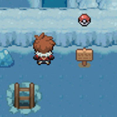
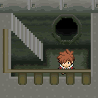
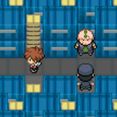
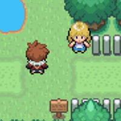
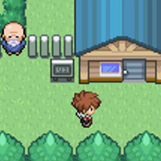
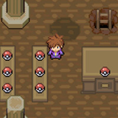

Mission #002: A Life of No Regrets
Mission #003: A Minor Scrap

Mission #004: A Rift in Space
Mission #005: Abandonment Issues
Mission #006: All the Right Moves
Mission #007: Am I Blind?
Mission #008: And Den There Were None
Mission #009: Armoured Body
Mission #010: As Hard as They Come
Mission #011: Average Angler
Mission #012: Bad Babysitter

Mission #013: Basic Literacy

Mission #014: Blazing Emeralds

Mission #015: Butterfly Effect
Mission #016: Bye-Bye, Butterfree
Mission #017: Darwin Was Right
Mission #018: Don’t Turn off the Power
Mission #019: Dowsing Wizard
Mission #020: Exp. Millionaire
Mission #021: Extreme Hyperosmia
Mission #022: Fisher Master
Mission #023: Flaming Body

Mission #024: Flushed Away
Mission #026: Great Piscator

Mission #027: Guardians of the Lake
Mission #028: Herd But Not Seen
Mission #029: Hero of the Hall

Mission #030: Home For a Hobo
Mission #031: Honey Gather
Mission #032: Hunter of the Swamp

Mission #033: If We Were Meant to Fly
Mission #034: Island Saviour

Mission #038: Major Miner

Mission #039: Master Incubator
Mission #040: More than a Game
Mission #041: Neighbourly Assistance
Mission #042: No Survivors
Mission #043: Nine Tales of Snow
Mission #045: No Fall Damage
Mission #046: Odd Odd Docks

Mission #047: One Purple Balloon
Mission #048: Pangs of Hunger
Mission #049: Population Control
Mission #050: Portal Purge
Mission #051: Protector of the Swamp
Mission #052: Pyukumuku Chucker
Mission #053: Seasonal Research
Mission #055: Splishy Splash
Mission #056: Statue of Regi
Mission #057: Supply and Demand
Mission #059: Swords of Justice
Mission #060: The Battle of Antisis
Mission #061: The Black Emboar
Mission #062: The West Borrius Pokedex
Mission #063: The Capitalist Revolution
Mission #064: The Communist Revolution
Mission #065: The Daily Grind

Mission #066: The Endless Nightmare
Mission #067: The Food Thief
Mission #068: The Most Dangerous Game
Mission #069: The National Pokedex

Mission #070: The Powerhouse of the Cell
Mission #071: The Rogue Electivire
Mission #072: The Strongest There Is
Mission #073: The Terror Granbull
Mission #074: The Trash-Man
Mission #075: The Wayward Kid

Mission #076: Tomb Raider
Mission #077: Too Much TV
Mission #078: Trader Traitor

Mission #079: Treasure Hunter
Mission #080: Ultimate Pie
Mission #082: Weed Whacker
Mission #084: You Are My Only